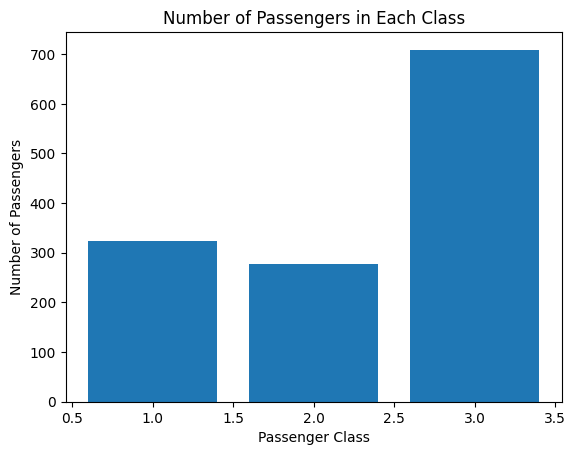
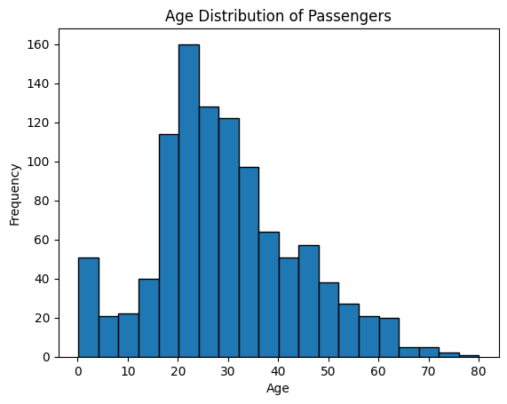
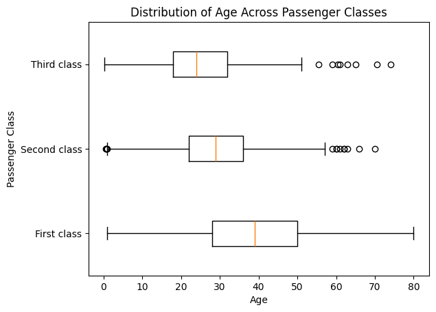
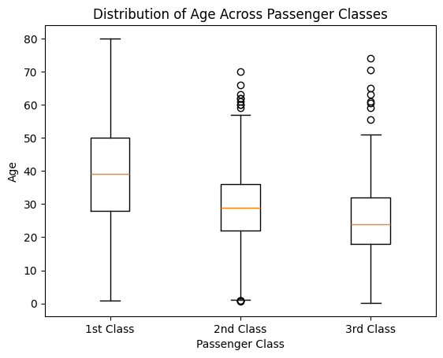
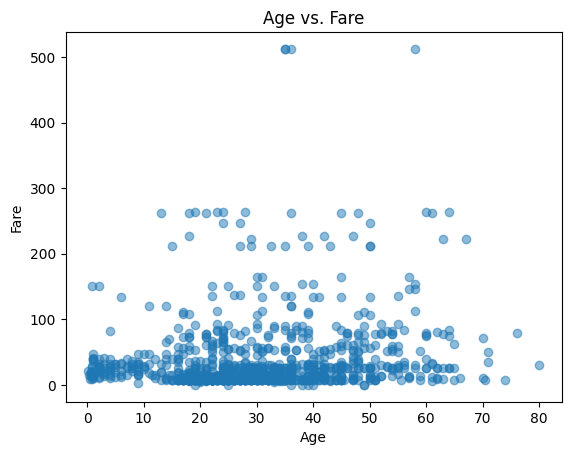
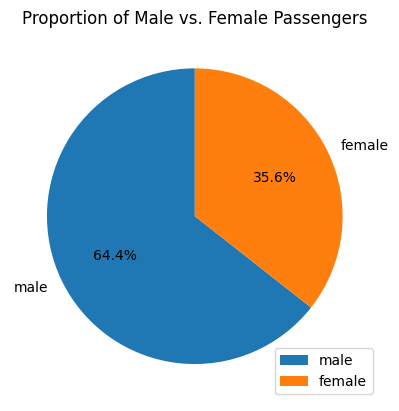
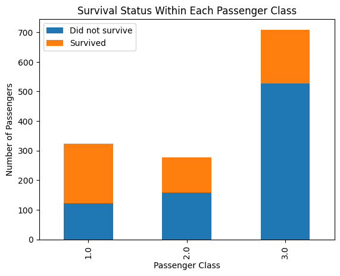
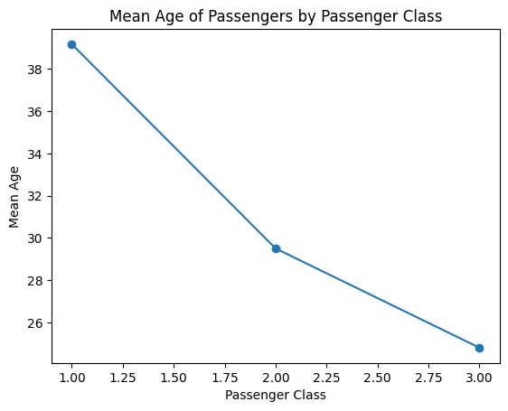

## Uncomment and run this cell to install the libraries
#!pip install pandas matplotlibMatplotlib
Matplotlib is a powerful plotting library in Python commonly used for data visualization. When working with datasets, you can use Matplotlib to create various plots to explore and visualize the data. Here are some major plots you can create using Matplotlib with the Titanic dataset:
# import the libraries, packages and modules
import pandas as pd
import matplotlib.pyplot as plt
from dataidea.datasets import loadDatasetLet’s demonstrate each of the plots using the Titanic dataset. We’ll first load the dataset and then create each plot using Matplotlib.
# Load the Titanic dataset
titanic_df = loadDataset('titanic')titanic_df.head(n=5)| pclass | survived | name | sex | age | sibsp | parch | ticket | fare | cabin | embarked | boat | body | home.dest | |
|---|---|---|---|---|---|---|---|---|---|---|---|---|---|---|
| 0 | 1.0 | 1.0 | Allen, Miss. Elisabeth Walton | female | 29.0000 | 0.0 | 0.0 | 24160 | 211.3375 | B5 | S | 2 | NaN | St Louis, MO |
| 1 | 1.0 | 1.0 | Allison, Master. Hudson Trevor | male | 0.9167 | 1.0 | 2.0 | 113781 | 151.5500 | C22 C26 | S | 11 | NaN | Montreal, PQ / Chesterville, ON |
| 2 | 1.0 | 0.0 | Allison, Miss. Helen Loraine | female | 2.0000 | 1.0 | 2.0 | 113781 | 151.5500 | C22 C26 | S | NaN | NaN | Montreal, PQ / Chesterville, ON |
| 3 | 1.0 | 0.0 | Allison, Mr. Hudson Joshua Creighton | male | 30.0000 | 1.0 | 2.0 | 113781 | 151.5500 | C22 C26 | S | NaN | 135.0 | Montreal, PQ / Chesterville, ON |
| 4 | 1.0 | 0.0 | Allison, Mrs. Hudson J C (Bessie Waldo Daniels) | female | 25.0000 | 1.0 | 2.0 | 113781 | 151.5500 | C22 C26 | S | NaN | NaN | Montreal, PQ / Chesterville, ON |
We can load this dataset in this format because it’s inbuilt in the dataidea library
- Bar Plot: You can create a bar plot to visualize categorical data such as the number of passengers in each class (first class, second class, third class), the number of survivors vs. non-survivors, or the number of passengers embarked from each port (Cherbourg, Queenstown, Southampton).
# 1. Bar Plot - Number of passengers in each class
class_counts = titanic_df['pclass'].value_counts()
plt.bar(class_counts.index, class_counts.values)
plt.xlabel('Passenger Class')
plt.ylabel('Number of Passengers')
plt.title('Number of Passengers in Each Class')
plt.savefig('barplot.pdf')
plt.show()
- Histogram: Histograms are useful for visualizing the distribution of continuous variables such as age or fare. You can create histograms to see the age distribution of passengers or the fare distribution.
# 2. Histogram - Age distribution of passengers
plt.hist(titanic_df['age'], bins=20, edgecolor='black')
plt.xlabel('Age')
plt.ylabel('Frequency')
plt.title('Age Distribution of Passengers')
plt.show()
- Box Plot: A box plot can be used to show the distribution of a continuous variable across different categories. For example, you can create a box plot to visualize the distribution of age or fare across different passenger classes.
first_class_ages = titanic_df[titanic_df.pclass == 1].age.dropna()
second_class_ages = titanic_df[titanic_df.pclass == 2].age.dropna()
third_class_ages = titanic_df[titanic_df.pclass == 3].age.dropna()plt.boxplot([first_class_ages, second_class_ages, third_class_ages],
labels=['First class', 'Second class', 'Third class'], vert=False)
plt.xlabel('Age')
plt.ylabel('Passenger Class')
plt.title('Distribution of Age Across Passenger Classes')
plt.show()
# 3. Box Plot - Distribution of age across passenger classes
plt.boxplot([titanic_df[titanic_df['pclass'] == 1]['age'].dropna(),
titanic_df[titanic_df['pclass'] == 2]['age'].dropna(),
titanic_df[titanic_df['pclass'] == 3]['age'].dropna()],
labels=['1st Class', '2nd Class', '3rd Class'])
plt.xlabel('Passenger Class')
plt.ylabel('Age')
plt.title('Distribution of Age Across Passenger Classes')
plt.show()
- Scatter Plot: Scatter plots are helpful for visualizing the relationship between two continuous variables. You can create scatter plots to explore relationships such as age vs. fare, age vs. survival status, or fare vs. survival status.
# 4. Scatter Plot - Age vs. Fare
plt.scatter(titanic_df['age'], titanic_df['fare'], alpha=0.5)
plt.xlabel('Age')
plt.ylabel('Fare')
plt.title('Age vs. Fare')
plt.show()
- Pie Chart: Pie charts can be used to visualize the proportion of different categories within a dataset. For example, you can create a pie chart to show the proportion of male vs. female passengers or the proportion of survivors vs. non-survivors.
class_counts = titanic_df.sex.value_counts()
genders = class_counts.index
values = class_counts.values# 5. Pie Chart - Proportion of male vs. female passengers
gender_counts = titanic_df['sex'].value_counts()
plt.pie(gender_counts, labels=gender_counts.index, autopct='%1.1f%%', startangle=90)
plt.title('Proportion of Male vs. Female Passengers')
plt.legend(loc='lower right')
plt.show()
- Stacked Bar Plot: Stacked bar plots can be used to compare the composition of different categories across groups. For example, you can create a stacked bar plot to compare the proportion of survivors and non-survivors within each passenger class.
# 6. Stacked Bar Plot - Survival status within each passenger class
survival_counts = titanic_df.groupby(['pclass', 'survived']).size().unstack()
survival_counts.plot(kind='bar', stacked=True)
plt.xlabel('Passenger Class')
plt.ylabel('Number of Passengers')
plt.title('Survival Status Within Each Passenger Class')
plt.legend(['Did not survive', 'Survived'])
plt.show()
titanic_df.groupby(['pclass', 'survived']).size().unstack()| survived | 0.0 | 1.0 |
|---|---|---|
| pclass | ||
| 1.0 | 123 | 200 |
| 2.0 | 158 | 119 |
| 3.0 | 528 | 181 |
- Line Plot: Line plots can be useful for visualizing trends over time or continuous variables. While the Titanic dataset may not have explicit time data, you can still use line plots to visualize trends such as the change in survival rate with increasing age or fare.
# 7. Line Plot - Mean age of passengers by passenger class
mean_age_by_class = titanic_df.groupby('pclass')['age'].mean()
plt.plot(mean_age_by_class.index, mean_age_by_class.values, marker='o')
plt.xlabel('Passenger Class')
plt.ylabel('Mean Age')
plt.title('Mean Age of Passengers by Passenger Class')
plt.show()
These are some of the major plots you can create using Matplotlib. Each plot serves a different purpose and can help you gain insights into the data and explore relationships between variables.
Back to top